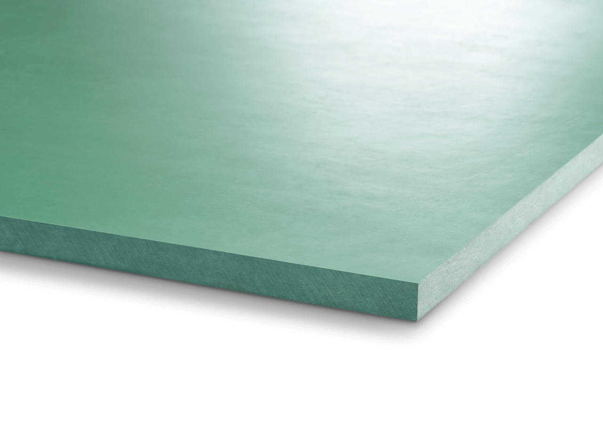
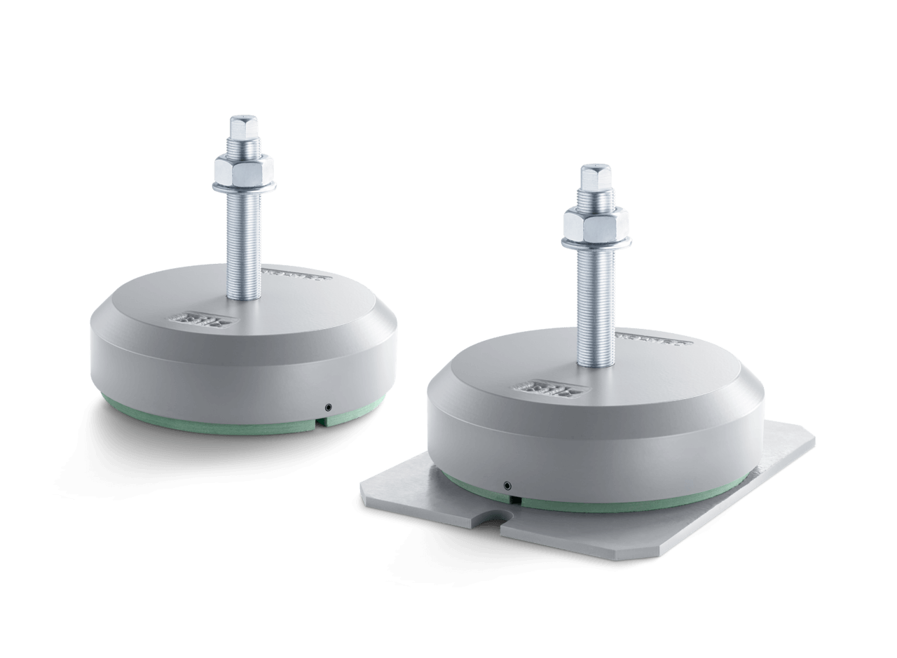
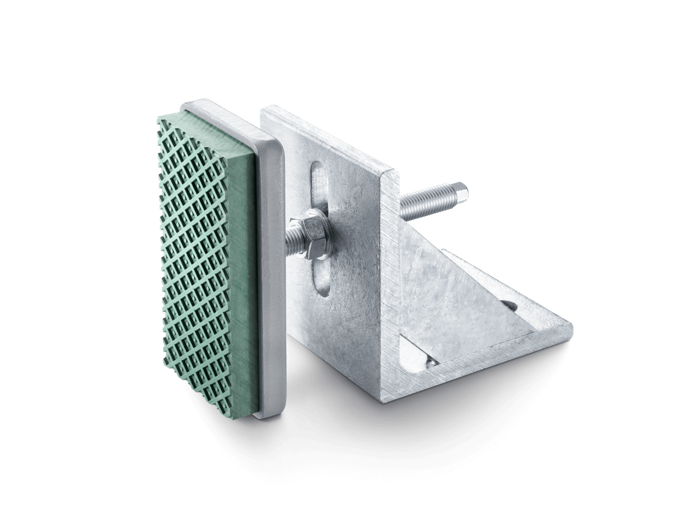
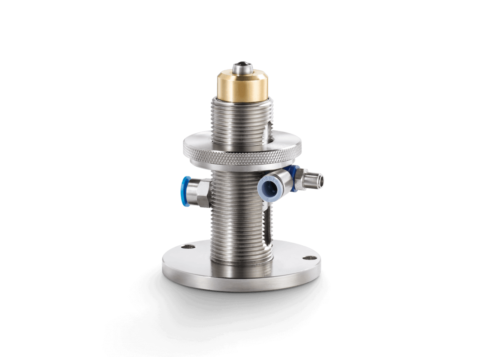
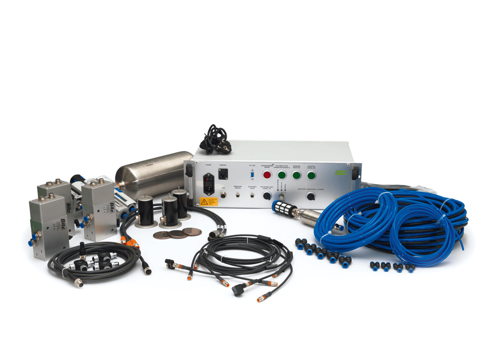
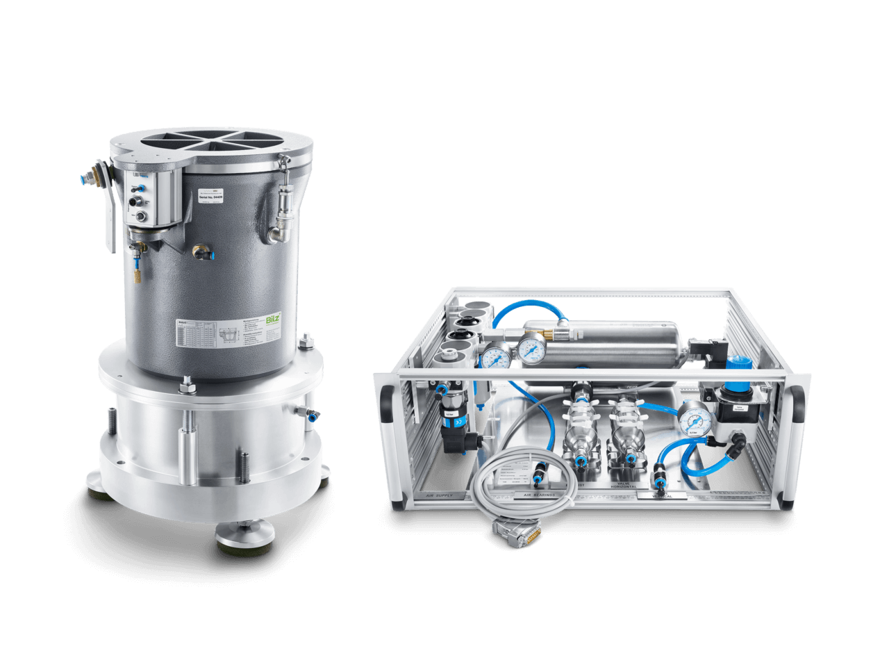
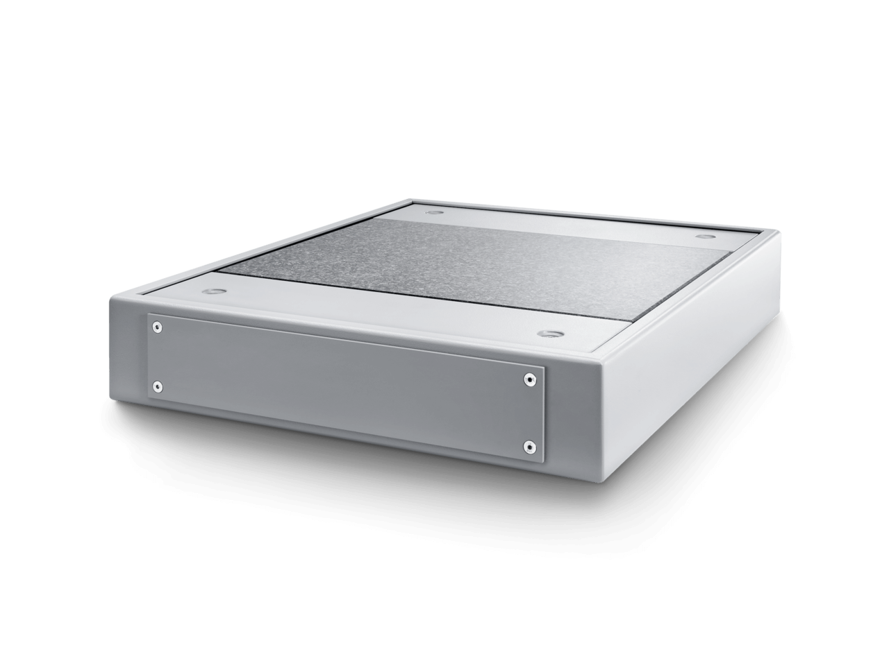
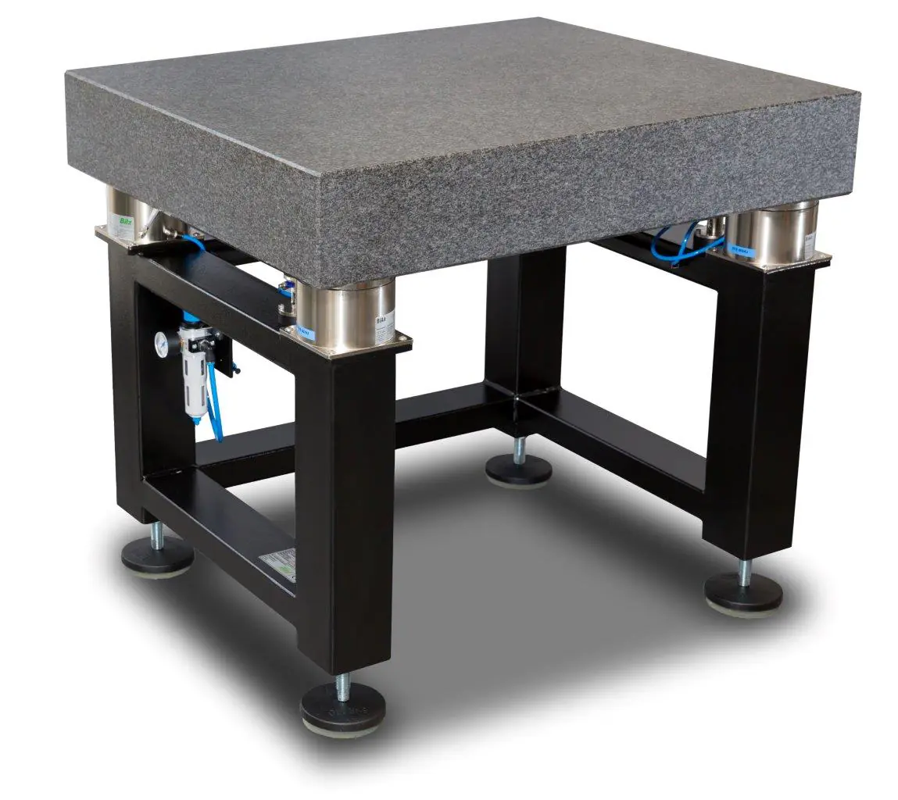

Maty antywibracyjne
Podkładki i płyty antywibracyjne gumowe — sprawdzone, ekonomiczne rozwiązanie dla szerokiego zakresu zastosowań przemysłowych. Maty antywibracyjne pod maszyny, prasy hydrauliczne, korbowe i mimośrodowe. Płyty gumowe SBR, pady antywibracyjne i elastomerowe — idealne do utrzymania ruchu.
- Płyty typu B0, B4, B6, B13, B30, B32, B50
- Obciążenie do 25 N/cm²
- Łatwy montaż bez fundamentu

Stopy poziomujące
Bezobsługowe stopy maszynowe do wibroizolowanego montażu maszyn CNC i urządzeń przemysłowych. Precyzyjne poziomowanie i jednoczesna izolacja od drgań. Stopy wahliwe, stopy regulacyjne, stopki antywibracyjne — szeroki wybór dla każdego obciążenia.
- Serie BNSH, BNR, BNV, BNL, GMA, BFE
- Nośność od 45 kg do 65 000 kg
- Izolacja drgań od 8 Hz

Kliny ustawcze
Kliny ustawcze do precyzyjnego poziomowania maszyn w przemyśle, badaniach i kontroli jakości. Fiksatory do maszyn (buty klinowe, fiksy) zapewniają stabilne i precyzyjne ustawienie obrabiarek nawet przy dużych obciążeniach. Kliny niwelujące, kliny poziomujące z wibroizolacją.
- Serie PKA, PKAK, PKD, PKDK, PK
- Wyposażenie A, B, C, D, E, F
- Precyzja do 0,02 mm/m

Elementy poziomujące
Do maszyn wymagających bocznego łączenia i fiksacji. Zapewniają stabilność horyzontalną i precyzyjne ustawienie. Niezbędne uzupełnienie wibroizolatorów w aplikacjach gdzie wymagana jest boczna stabilizacja maszyny.
- Stabilizacja boczna maszyn
- Współpraca z wibroizolatorami
- Kompaktowa konstrukcja

Wibroizolatory pneumatyczne
Poduszki i miechy pneumatyczne antywibracyjne do wibroizolacji maszyn CNC w produkcji przemysłowej, maszyn pomiarowych 3D i skanerów optycznych w kontroli jakości. Dampery pneumatyczne, izolatory pneumatyczne, poduszki powietrzne — najwyższa skuteczność izolacji drgań.
- Serie BiAir ED, BiAir ED-AL, BiAir ED-HE, FAEBI
- Izolacja drgań od 1,2 Hz
- Automatyczna regulacja poziomu

Mechaniczne systemy poziomowania
Mechaniczno-pneumatyczne systemy regulacji poziomu do automatycznego poziomowania maszyn. Utrzymują stały poziom maszyny niezależnie od zmian obciążenia — idealne dla obrabiarek CNC z ruchomymi stołami.
- Serie MPN-LCV, MPN-PVM
- Automatyczna kompensacja obciążenia
- Współpraca z wibroizolatorami BiAir

Elektroniczne systemy poziomowania
Elektroniczne sterowniki poziomu EPPC do precyzyjnego, w pełni automatycznego zarządzania poziomem maszyn. Sterownik wibracji z cyfrowym wyświetlaczem i diagnostyką — dla najbardziej wymagających aplikacji w metrologii i kontroli jakości.
- Sterownik EPPC
- Cyfrowa diagnostyka i monitoring
- Precyzja do 0,001 mm

Aktywna wibroizolacja
Aktywne systemy izolacji drgań dla stanowisk testowych, shakerów i maszyn pomiarowych z elektronicznym sterowaniem. Testowe stanowiska antywibracyjne aktywne na stanowiskach badawczych i wytrzymałościowych. Najwyższy poziom tłumienia drgań.
- System AIS
- Izolacja od 0,5 Hz
- Do stanowisk testowych i shakerów

Platformy stołowe
Kompaktowe platformy antywibracyjne do montażu na stołach i blatach roboczych. Podstawy antywibracyjne pod mikroskopy, wagi analityczne, skanery optyczne i inne wrażliwe urządzenia laboratoryjne. Płyty antywibracyjne w formacie stołowym.
- Serie VITAP BM, VITAP F, VITAP FP, eStable mini
- Kompaktowe wymiary stołowe
- Izolacja od niskich częstotliwości

Stoły antywibracyjne
Stoły wagowe laboratoryjne antywibracyjne, stoły optyczne pod mikroskopy i mikroskopy elektronowe. Płyty optyczne Honeycomb, breadboardy optyczne, platformy antywibracyjne do laboratoriów. Kompletne rozwiązanie do współrzędnościowych maszyn pomiarowych.
- Serie LTH i LTO z wibroizolacją BiAir
- Opcje: ED, OC, PAS
- Blaty granitowe i stalowe